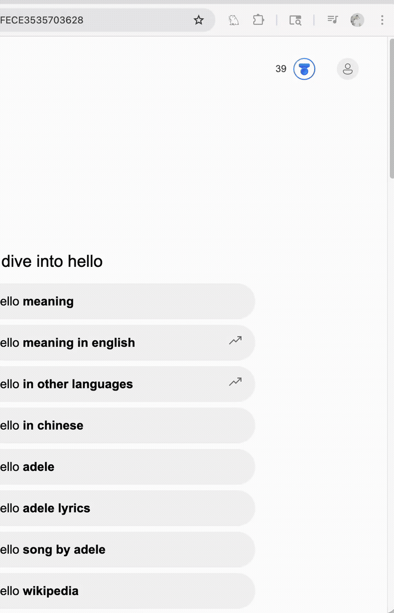
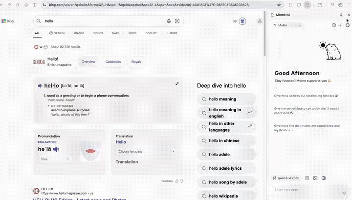
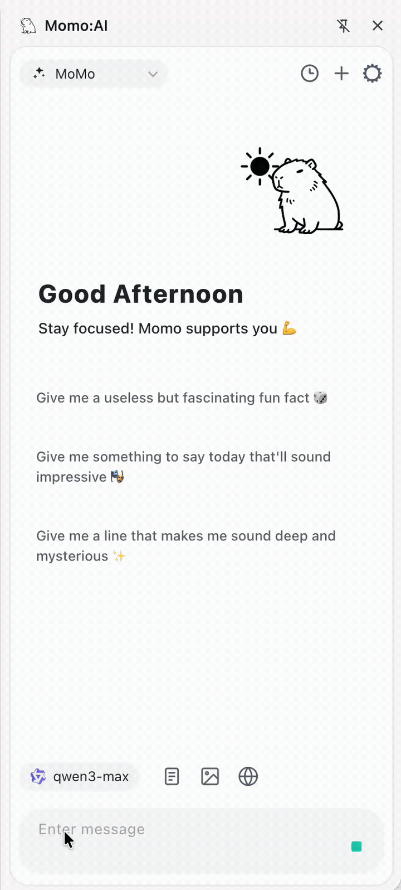

快速開始
安裝完成後，跟著以下步驟，幾分鐘內就能開始使用 Momo AI。
第一步：開啟側邊欄

有三種方式可以開啟 Momo AI 側邊欄：
- 點擊工具列圖示 — 點擊 Chrome 工具列上的 Momo AI 圖示
- 鍵盤快捷鍵 — 需先至
chrome://extensions/shortcuts自行設定，詳見快捷鍵頁面 - 懸浮球 — 如果啟用了懸浮球功能，直接點擊頁面上的浮動按鈕
第二步：設定 AI 供應商

- 在側邊欄右上角點擊 ⚙️ 設定 按鈕
- 在左側導覽選擇 AI 模型
- 從供應商列表中選擇你要使用的服務（例如 OpenAI、Google AI、DeepSeek）
- 輸入對應的 API 金鑰（部分本地供應商如 Ollama 無需金鑰）
- 點擊 測試連線 確認設定正確
💡 不需要 API 金鑰？
如果你使用 Ollama 或 LM Studio，只需確保本地服務已啟動，不需要輸入 API 金鑰。
第三步：開始對話

回到側邊欄，在底部的輸入框中輸入你的問題，然後按下 Enter 或點擊送出按鈕。
你也可以嘗試點擊歡迎畫面中的建議話題快速開始對話。
進階功能速覽
側邊欄底部的工具列提供了多個實用功能：
| 按鈕 | 功能 | 說明 |
|---|---|---|
| 📄 | 引用頁面 | 擷取當前網頁內容作為對話上下文 |
| 🖼️ | 上傳圖片 | 附加圖片讓 AI 分析 |
| 🔍 | 聯網搜尋 | 讓 AI 搜尋網路即時資訊 |
| 💡 | 思考模式 | 啟用深度推理，顯示思考過程 |